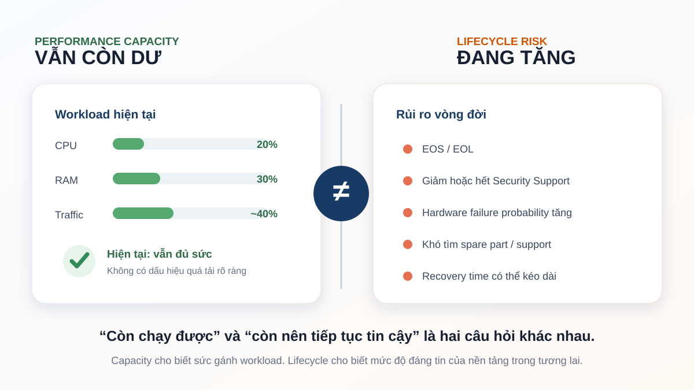

Hệ thống vẫn chạy tốt, tại sao vẫn phải thay?
CPU vẫn thấp. RAM vẫn còn dư. Traffic chưa chạm trần. Hệ thống vẫn chạy mỗi ngày. Vậy tại sao team lại bắt đầu nói đến chuyện thay nó?

Câu hỏi này từng làm mình nhận ra rằng, trong Infrastructure, “còn chạy được” và “còn nên tiếp tục tin cậy” là hai chuyện rất khác nhau.

Những con số rất dễ làm mình yên tâm
Trong một đợt Capacity Assessment năm 2025, mình cùng team nhìn lại nhiều lớp của Network Infrastructure: Firewall, Router, Core, Distribution, Access, Wireless và các đường truyền. Historical monitoring data được dùng để xem CPU, RAM, Bandwidth và Uptime thay vì chỉ nhìn một snapshot tại thời điểm đánh giá.
Kết quả của nhiều thiết bị khá dễ chịu. CPU không cao. RAM còn dư. Bandwidth phần lớn chưa phải bottleneck thường trực. Nếu câu hỏi duy nhất là “thiết bị có đủ sức gánh workload hiện tại không?”, câu trả lời ở nhiều chỗ là: có.
Và đây chính là lúc mình thấy Capacity Planning rất dễ dừng quá sớm.
Một graph CPU thấp nói cho mình biết thiết bị chưa bị quá tải. Nó không nói nguồn điện đã chạy bao nhiêu năm. Nó không nói vendor còn phát hành security fix bao lâu. Nó cũng không nói khi một module hỏng, mình còn tìm được replacement part trong thời gian chấp nhận được hay không.
Performance graph kể khá rõ câu chuyện về workload. Nhưng gần như không nói gì về tuổi đời của nền tảng.
Những rủi ro không hiện màu đỏ trên Dashboard
Khi mở rộng assessment sang lifecycle, bức tranh bắt đầu khác. Một số platform đã đi tới hoặc tiến gần EOS/EOL. Có thiết bị performance vẫn tốt nhưng supportability giảm dần theo thời gian. Và trong lịch sử vận hành, những sự cố phần cứng như nguồn, port hay interface cũng nhắc mình rằng tuổi đời vật lý không thể nhìn qua CPU percentage.
Điều đáng chú ý là những rủi ro này thường không tạo Alert ngay hôm nay.
Không có trigger nào nói: “thiết bị này vẫn chạy tốt, nhưng vài năm nữa việc tìm spare part sẽ khó”. Không có Dashboard đỏ vì software train sắp hết support. Hệ thống vẫn xanh — cho đến ngày một failure biến rủi ro âm thầm thành incident thật.
Vì vậy khi làm Capacity Assessment, mình không chỉ hỏi thiết bị còn đủ CPU/RAM hay bandwidth hay không. Mình hỏi thêm: nền tảng này còn được hỗ trợ đến đâu, có spare không, recovery path là gì và nếu hỏng thì team có thay thế được trong thời gian chấp nhận được không?
Một câu hỏi là: nó còn đủ sức không?
Câu còn lại là: nó còn đủ đáng tin để tiếp tục đặt workload quan trọng lên đó không?
Thấy EOL không có nghĩa là phải mua mới ngay
Nhưng mình cũng không nghĩ cứ thấy EOL là phải lập tức thay.
Infrastructure luôn có giới hạn về budget, change window và nguồn lực triển khai. Một thiết bị hết vòng đời nhưng nằm ở vị trí ít critical, có spare và có phương án bypass có thể mang risk khác hoàn toàn với một thiết bị tương tự đang nằm trên critical path.
Vì vậy lifecycle information chỉ là một đầu vào. Khi quyết định giữ hay thay, mình vẫn phải nhìn thêm business impact, redundancy, failure history, supportability, security exposure và khả năng recovery.

Nhìn theo cách này, assessment không dẫn tới một danh sách đơn giản kiểu “giữ” và “thay”. Thường thực tế hơn là một roadmap: cái gì chỉ cần theo dõi, cái gì nên tối ưu, cái gì cần chuẩn bị budget cho giai đoạn tới và cái gì phải ưu tiên trước.
Mình thích cách này hơn việc gom tất cả thiết bị cũ vào một đợt mua sắm lớn. Hạ tầng thường được thay dần theo mức độ rủi ro và mức độ quan trọng, chứ hiếm khi có một ngày đẹp trời để thay tất cả cùng lúc.
Thay khi còn chủ động luôn khác với thay trong lúc có sự cố
Có một khác biệt rất lớn giữa hai tình huống.
Tình huống thứ nhất: team biết một platform đang già đi, có thời gian đánh giá option, chuẩn bị budget, test configuration, lên maintenance window, viết validation plan và rollback plan.
Tình huống thứ hai: thiết bị chết vào một ngày không ai chọn. Team bắt đầu tìm spare part, kiểm tra compatibility, gọi vendor và thay đổi hệ thống trong lúc business đang chờ service quay lại.
Cuối cùng cả hai đều có thể kết thúc bằng một thiết bị mới.
Nhưng mức rủi ro trên đường đi hoàn toàn khác.

Đó là lý do mình không xem lifecycle management đơn giản là chuyện “đồ cũ thì thay”. Điều mình muốn giữ cho team là khả năng được chọn thời điểm thay đổi, thay vì để một failure bất ngờ chọn thay mình.
Capacity Planning cuối cùng không chỉ nói về Capacity
Sau đợt assessment đó, điều mình nhớ nhất không phải một con số CPU hay Bandwidth cụ thể.
Mình nhớ sự thay đổi trong câu hỏi.
Từ:
“Hệ thống hiện tại còn chạy nổi không?”
sang:
“Trong một đến vài năm tới, đây còn là nền tảng mà mình muốn business tiếp tục phụ thuộc vào không?”
Câu thứ hai khó hơn vì nó buộc mình phải nhìn ra ngoài Dashboard: lifecycle, support, security, failure history, recovery, budget và cả thời điểm thích hợp để thay đổi.
Một hệ thống có thể hoạt động rất nhẹ hôm nay nhưng vẫn để lại một bài toán khó cho ngày mai nếu nền tảng đã quá cũ và đường recovery ngày càng hẹp.
Vì vậy, một hệ thống còn chạy được chưa chắc là một hệ thống mình còn nên đặt niềm tin vào trong vài năm tới.
Ghi lại từ những trải nghiệm thực tế của mình trong quá trình làm Infrastructure — những câu chuyện vẫn còn tiếp tục.
Đọc trước ← Khi Monitoring nói dối